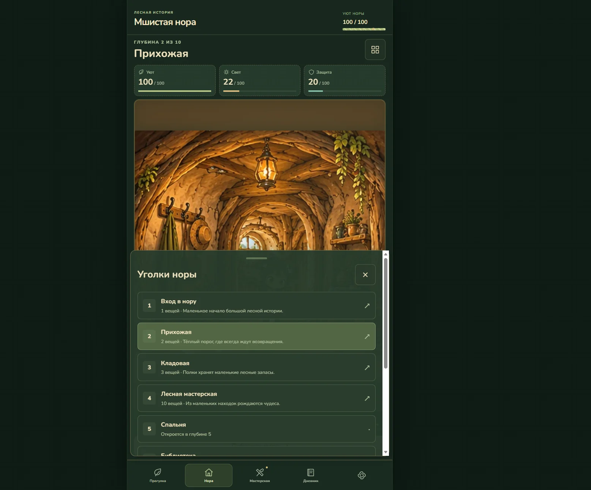
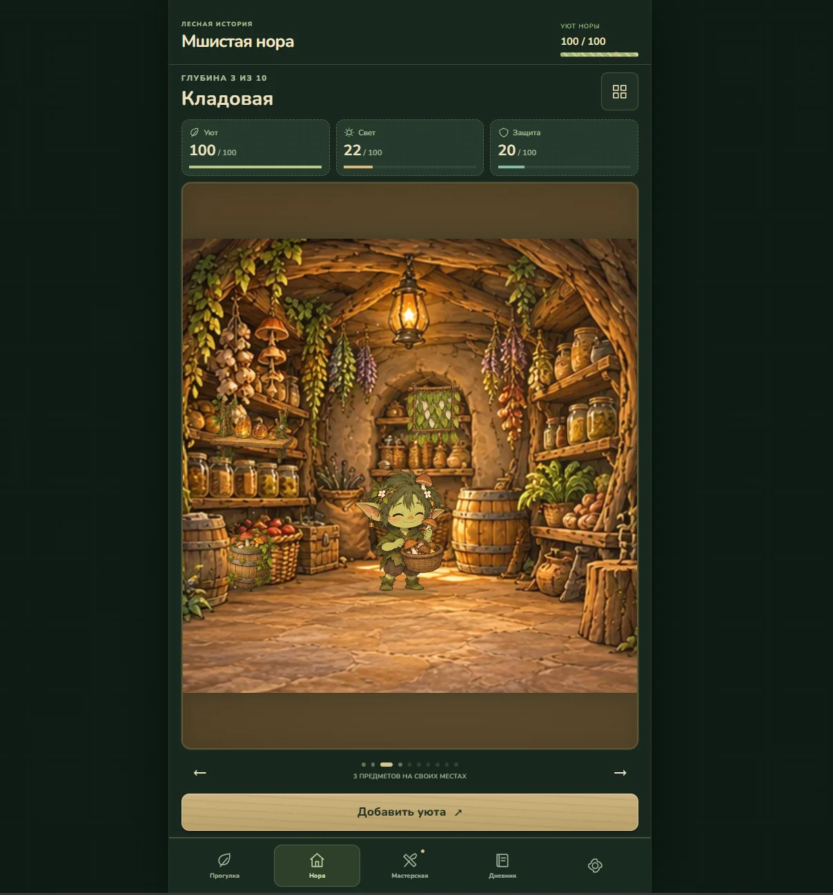
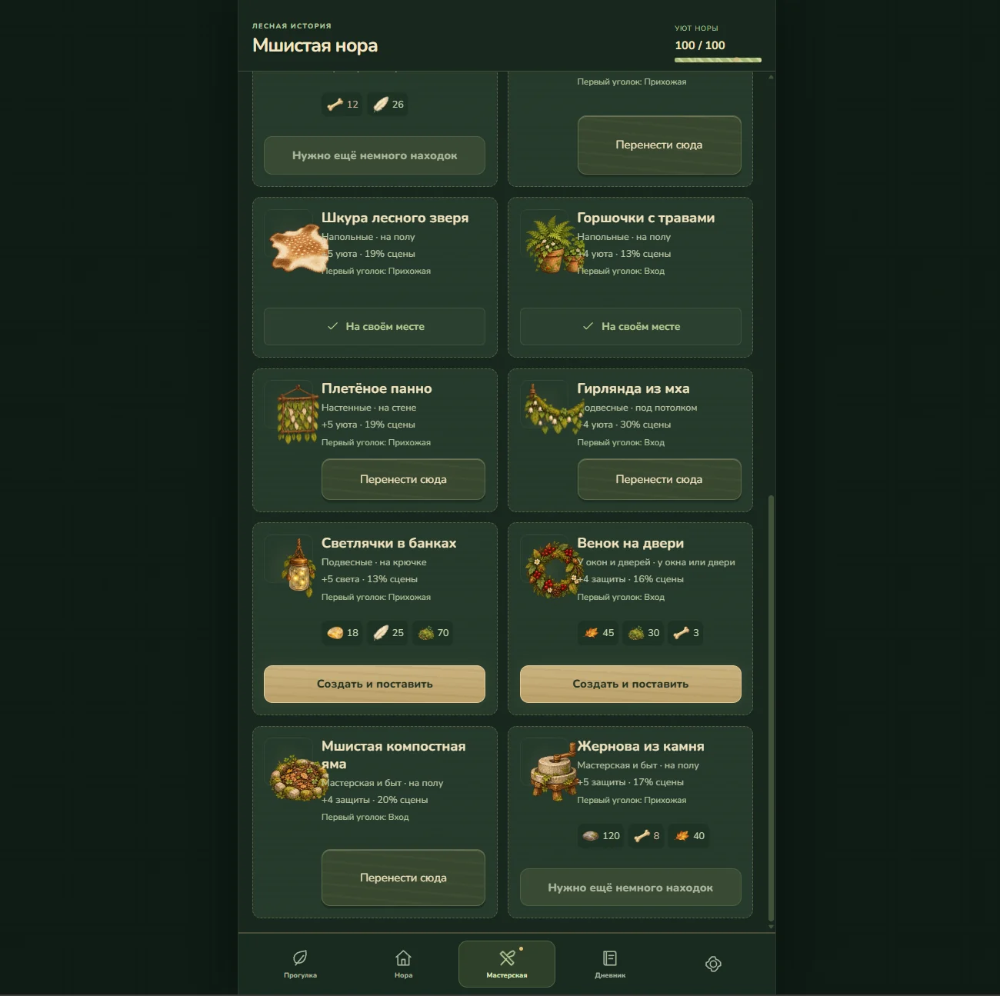
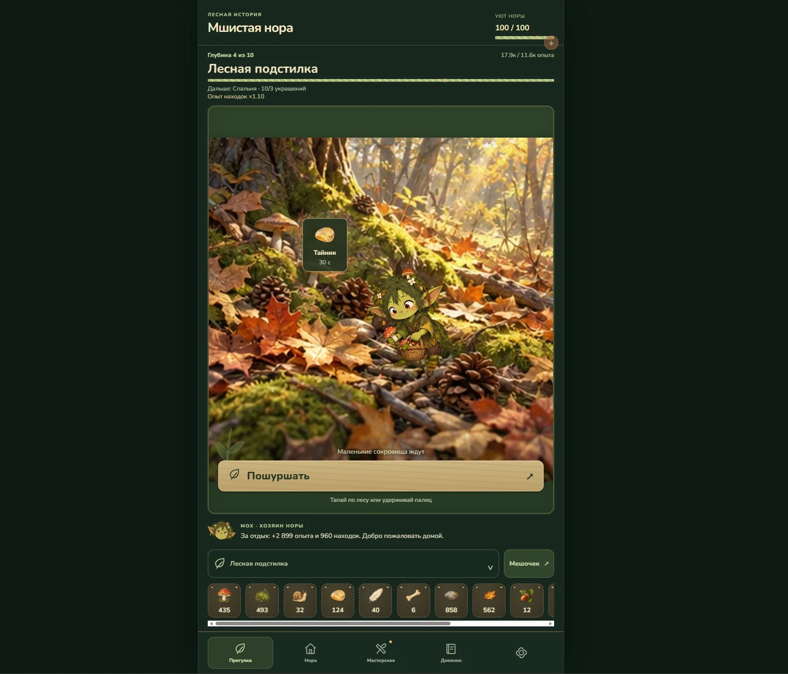
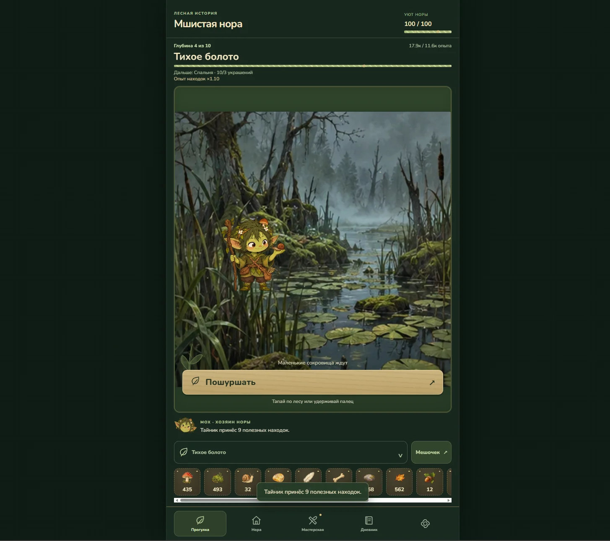

МШИСТАЯ НОРА
Мобильный кликер о маленьких находках и большом чувстве уюта.

Задача
Создать уютный лесной уголок в телефоне. Игрок помогает гоблину Мху обустраивать нору: исследует локации, собирает ресурсы и превращает находки в предметы для дома.
Дизайнерская задача: сделать прогрессию понятной, а короткую игровую сессию эмоционально приятной. Дом должен показывать результат действий без сложных объяснений.
Моя роль
Визуальное направление, игровые экраны, пользовательские сценарии, система прогрессии и эмоциональный образ маскота. Главный акцент в моей работе: как интерфейс и игровой мир поддерживают друг друга.
Для технической сборки использовались AI-инструменты. Дизайн-решения, структура и оценка визуального результата оставались моей зоной ответственности.
Игровой цикл
- Прогулка. Простое действие запускает поиск и даёт находку.
- Коллекция. Предметы собираются в понятный инвентарь.
- Мастерская. Ресурсы превращаются в предметы для дома.
- Нора. Изменение пространства делает прогресс видимым.
Почему так
- Постоянная нижняя навигация. Основные занятия доступны в одном и том же месте.
- Показатели уюта, света и защиты. Абстрактное развитие получает понятные значения и визуальный отклик.
- Тёплые материалы. Бумага, дерево и лесная палитра связывают кнопки с окружением.
- Маскот. Герой помогает воспринимать систему как живой мир.
Результат
Система игровых экранов: прогулка, нора, коллекции и развитие жилища. Взаимодействия объединены одной визуальной логикой, а прогресс выражается через пространство и вещи.
Следующий шаг для оценки эффективности: наблюдать за первым прохождением новых игроков, проверить понятность ресурсов и навигации. Измеренных данных о retention или коммерческих результатах в этом кейсе нет.
Экраны и детали
Материалы проекта: интерфейс, визуальные состояния и атмосфера.



